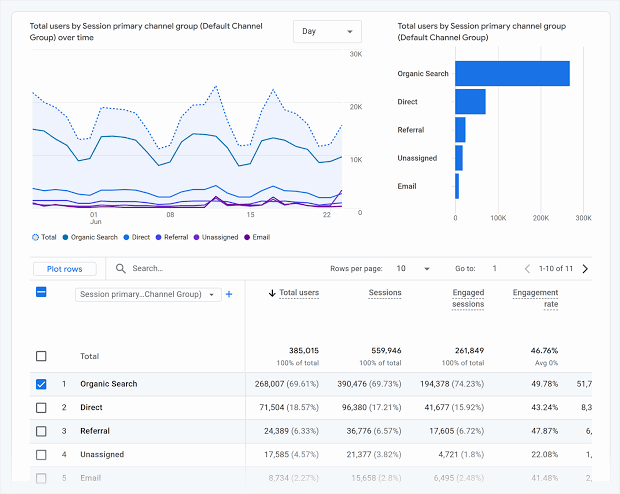
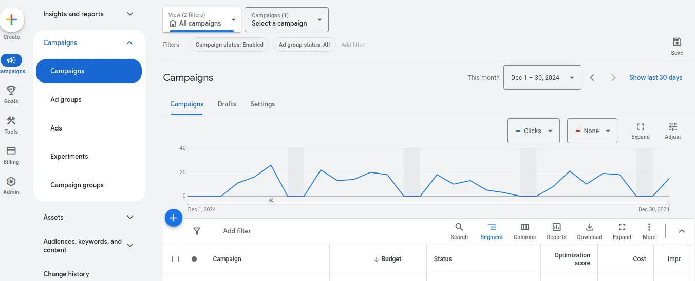
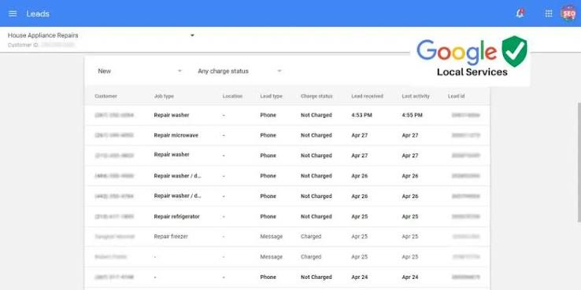

Closed-loop spend scaling
A roadside tire business had run for almost a year with less than a job a day. Ad spend needed to increase, but increasing without data was hard. Three ad platforms each reported a fraction of what was happening. None could answer the only question that mattered: did the call turn into work?

GA4 Sessions and call-button taps on the site — but a tap it often couldn't trace back to a source.
Google Ads Calls tied to campaigns and keywords, and blind to every call it didn't serve.
Local Services Ads A separate console of leads, joining to neither of the other two.Screenshots are Google's own product imagery, not this account's data.
Almost no calls, in the season that should have been busiest
Mobile commercial tire service — where a stranded driver searches once and calls whoever answers. Demand isn't the constraint. Being findable at the moment of the search is.
The owner rarely did more than a job a week. It should have been the busy season. Ads pointed at a Google Business Profile; there was no website for credibility or to place conversion tracking and no landing experience to tune.
Every measurement decision that followed depended on first having somewhere to measure.
The order mattered
Each step was a precondition for the next.
Three systems, three partial truths
tel: click events — a real conversion on a business that runs on calls.
Tracing a tap back to its source was difficult and often impossible.
Left alone this produces two failures: the same call counted twice by two systems that each claim it, and a call counted by none of them — credited to no source at all. Both distort the only number that decides budget: what a source actually returns.
The deeper gap: all three measure calls. The business makes money on jobs. A cost-conscious owner asked to spend more isn't asking how many phones rang.
End to end call tracking
Began in Google Sheets, fed by a simple Google Form — a deliberate choice over anything more sophisticated. The outcome data could only come from the person answering the phone, so adoption was the binding constraint. A tool the owner fills in between jobs beats a better one he abandons.

Normalize reported phone number to LSA format.
Aggregation by date, source, type, and outcome. Charts built on that data made gaps and trends visible directly.
LSA calls are exported with a time and phone number, Google Ads calls with a 1-hour time range and ad category. This is enough - start with LSA number and time matching, fallback to Google Ads category and time matching = reliable attribution, especially for relatively low call volume.
The owner records what the call was and whether it became work — the same details he still records on job forms today. That column is the one thing no platform could supply.
Call data is self-reported and hand-entered, so it carries the usual risks. It was reconciled against platform call counts to catch gaps, but it isn't instrumented ground truth. It was accurate enough to make budget decisions with, which was the bar it needed to clear.
Measurement unlocked the spend
The owner was reluctant to double his ad spend. Within one to two months — call volume visibly climbing, each call traceable to a source and an outcome — he was spending more than ten times the original budget across channels, confidently.
An owner who won't increase ad spend because he can't see what it returns isn't being stubborn. He's responding correctly to missing information.
That decision is the strongest evidence the system worked, and better evidence than a figure would be. Nobody multiplies their ad spend tenfold on a channel they can't see returning.
The problem it surfaced next
Better measurement produces better problems. With calls classified by outcome, leaks became visible: some calls measured as "conversions" by Google Ads weren't converting to jobs, and searchers who landed on the page and left because it didn't show what they were looking for.
Resulting work: tightening keyword targeting, plus landing page changes to increase call-rate. Then watching the outcome to confirm improvement instead of guessing.
Why this became software
Running the Sheets system revealed how much was tracked by hand elsewhere:
- Call attribution in a Google Form feeding a spreadsheet
- Invoices in separate third-party software
- Tire inventory counted manually
- Quotes calculated by hand, unlinked to the job they became
- No expense tracking at all
- No customer accounts at all
Not six problems — six views of one event. A call arrives from a source and becomes a job, the job consumes tires, produces an invoice, generates expenses, and belongs to a customer. Modeling that event once collapses all six.